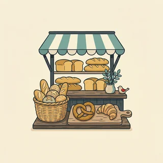

Es gibt fünf Wege, aus einem Wort mehrere zu machen — und man kann sie nicht wirklich vorhersagen. Aber es gibt eine Gruppe, bei der es immer gleich läuft, und einen Artikel, der im Plural nie wechselt.
A1 · ab A1
🔑 Immer die📐 Fünf Endungen🎯 Die Umlaute⭐ Mitlernen

„Ein Brötchen, bitte.“ — oder gleich sechs?
Eins wird mehrere
Der Plural steht auf jedem Einkaufszettel und in jeder Bestellung. Und er bringt eine Erleichterung mit: Im Plural heißt der Artikel immerdie — egal ob das Wort vorher der, die oder das war.
das Brötchen → die Brötchen
gar keine Endung
das Ei → die Eier
Endung -er
die Tomate → die Tomaten
Endung -n
🔑 Die eine sichere Regel: Im Plural ist der Artikel immer die. der Mann → die Männer, das Kind → die Kinder, die Frau → die Frauen.
Fünf Endungen — und oft ein Umlaut dazu
Diese fünf Wege gibt es, mehr nicht. Welcher gilt, kann man selten erraten — deshalb lernt man den Plural wie den Artikel gleich mit dem Wort. Manche bekommen zusätzlich einen Umlaut: a→ä, o→ö, u→ü.
Singulardas Buch
wird zu→
Pluraldie Bücher
Endung
Beispiel
Wer bekommt sie oft?
-e
der Tag → die Tage
viele männliche Wörter
-en / -n
die Frau → die Frauen
fast alle weiblichen Wörter
-er
das Kind → die Kinder
viele kurze sächliche Wörter
-s
das Auto → die Autos
Wörter aus anderen Sprachen
keine
das Brötchen → die Brötchen
Wörter auf -chen, -lein, -er
📐 Eine Regel ohne Ausnahme: Alles auf -ung, -heit, -keit und -schaft bildet den Plural mit -en: die Wohnung → die Wohnungen. Diese Wörter sind ohnehin alle weiblich.
Drei Fallen, die oft vorkommen
Bei diesen drei Gruppen passiert etwas, womit man nicht rechnet — und alle drei stehen in jedem zweiten Alltagssatz.
Umlaut ohne Endung
der Vater → die Väter
Manche Wörter ändern nur den Vokal: der Bruder → die Brüder, die Mutter → die Mütter.
Kein Plural
das Obst, das Geld
Manche Wörter gibt es nur im Singular: Obst, Geld, Wasser, Milch. Man sagt viel Obst, nicht viele Obste.
Nur Plural
die Eltern, die Leute
Und umgekehrt: die Eltern, die Leute, die Ferien gibt es nur in der Mehrzahl.
💡 So notierst du es richtig: Schreib im Heft nicht Buch, sondern das Buch, die Bücher. Ein Wort mit Artikel und Plural ist ganz gelernt — alles andere musst du später noch einmal nachholen.
Quiz: wie heißt die Mehrzahl?
Tippe die richtige Antwort an. Die Erklärung erscheint sofort.
Welcher Artikel steht im Plural?
Im Plural heißt es die — für alle drei Geschlechter.
Wie heißt der Plural von „das Kind“?
Kurze sächliche Wörter bekommen oft -er: das Kind → die Kinder.
Welche Wörter bekommen -s im Plural?
-s steht vor allem bei Fremdwörtern: die Hotels, die Handys, die Sofas.
Wie bilden Wörter auf -ung den Plural?
die Wohnung → die Wohnungen. Das gilt auch für -heit, -keit und -schaft.
Wie heißt der Plural von „der Bruder“?
Hier ändert sich nur der Vokal — ein Umlaut ohne Endung.
Welches Wort gibt es nur im Plural?
die Eltern, die Leute und die Ferien haben keinen Singular.
Lückentext: der Einkaufszettel
Wähle in jeder Lücke die richtige Pluralform.
1. Ich brauche sechs .
2. Bitte zehn und ein Kilo Tomaten.
3. Meine wohnen noch in Polen.
4. Die sind heute alle im Kindergarten.
5. In der Straße stehen viele .
6. Wir haben zwei besichtigt.
Wort und seine Mehrzahl
Tippe links ein Wort an, dann rechts die passende Pluralform.
Einzahl
das Brötchen
das Ei
die Wohnung
das Auto
Mehrzahl
die Autos — Endung -s
die Eier — Endung -er
die Brötchen — keine Endung
die Wohnungen — Endung -en
Sprechen — in Mengen denken
Tippe auf „Neue Karte“ und antworte in ganzen Sätzen. Sag jedes Wort im Plural mit die.
Tippe unten auf „Neue Karte“…
Weiterüben: vierzehn Aufgaben im Konto
Auf dieser Seite steht die Regel. Zum Üben liegen im Konto vierzehn weitere Aufgaben zum Plural — mit Lösung und Erklärung nach jedem Satz.
Mission: Nimm zwanzig Wörter, die du schon kennst, und schreib sie dreiteilig auf: Artikel, Wort, Plural. Also das Buch, die Bücher. Sag jedes einmal laut.
🏆 Bonus 1: Schreib einen echten Einkaufszettel auf Deutsch — mit Mengen und Pluralformen.
🏆 Bonus 2: Such fünf Wörter, die einen Umlaut bekommen. Sprich Singular und Plural direkt hintereinander.
🍎 Für die Lehrkraft – Stundenablauf (60 Min.)
Schwerpunkt: die Entlastung durch den einheitlichen Artikel die, und die Gewohnheit, den Plural von Anfang an mitzunotieren. Vollständigkeit ist hier nicht das Ziel.
Lernziel
TN nennen den Artikel im Plural sicher.
TN ordnen häufige Wörter einer der fünf Endungsgruppen zu.
TN notieren neue Nomen ab jetzt mit Artikel und Plural.
Ablauf
0–6' Aufwärmen: drei Bilder aus der Bäckerei. TN bilden Mengenangaben.
6–16' Die fünf Endungen. Zu jeder sammeln TN zwei eigene Wörter.
16–24' Umlaute hörbar machen: Singular und Plural direkt hintereinander sprechen.
24–32' Sonderfälle: nur Singular, nur Plural. Kurz halten, nur als Hinweis.
32–42' Quiz und Lückentext am Einkaufszettel.
42–52' Rollenspiel Einkauf: Mengen bestellen, alles im Plural.